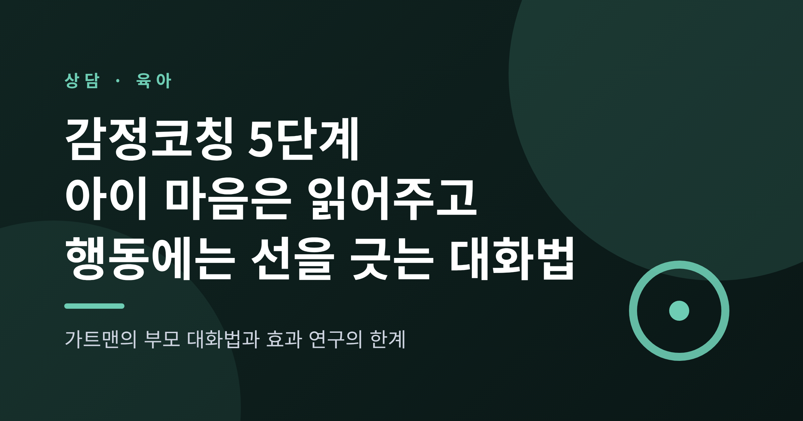
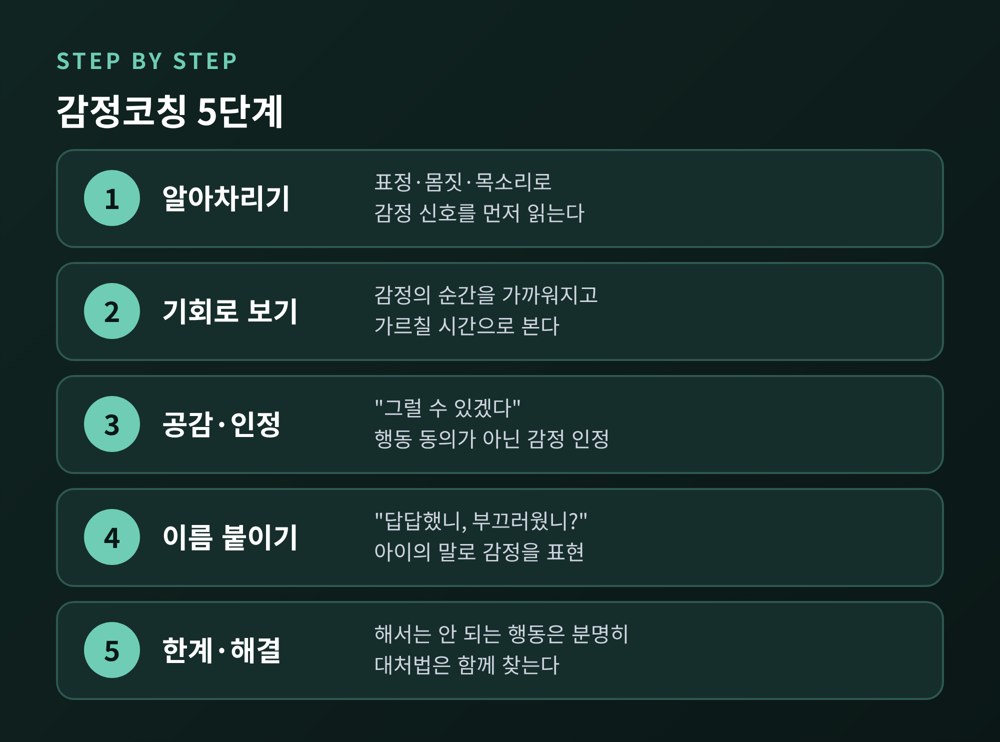
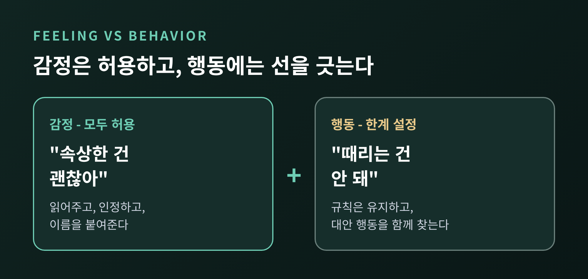
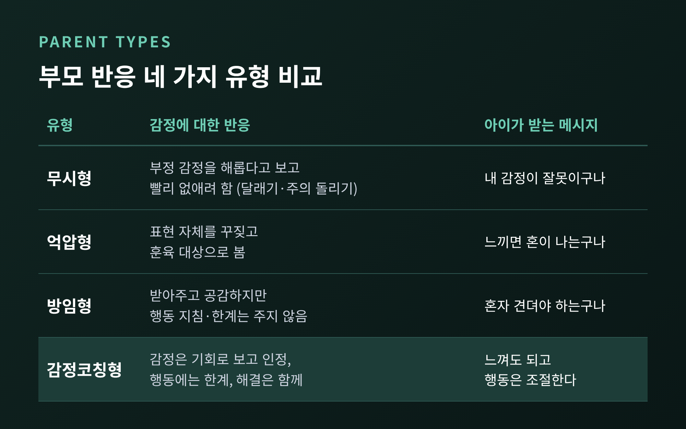
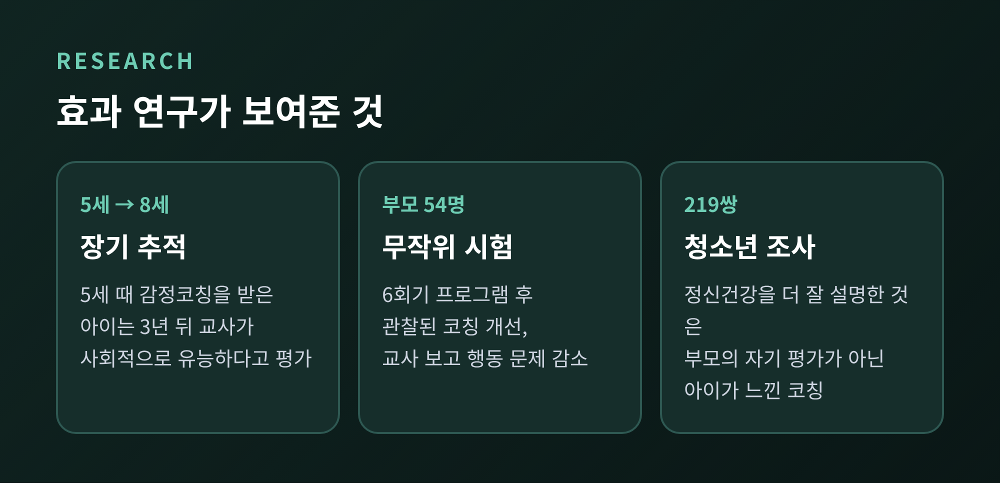
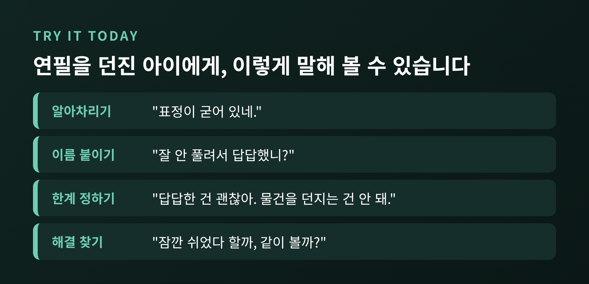

오늘은 가트맨의 감정코칭 5단계에 대해 이야기해 보려 합니다.
핵심은 하나입니다. 아이의 감정은 먼저 읽어주되, 행동의 한계는 분명히 정하는 것입니다.
이 글에서는 5단계의 내용, 감정 무시형·억압형·방임형 부모와의 차이, 그리고 효과 연구의 근거와 한계를 차례로 정리합니다.
※ 본문의 사례는 여러 가정의 흔한 상황을 바탕으로 만든 일반화된 예시이며, 특정 가족의 이야기가 아닙니다.
감정코칭은 심리학자 존 가트맨 연구진이 정리한 부모 양육 접근입니다.
출발점은 '메타감정'이라는 개념입니다. 감정에 대한 감정과 생각을 뜻합니다.
부모가 슬픔이나 분노를 어떻게 바라보는지가, 아이가 감정을 대하는 방식에 영향을 준다는 관점입니다.
가트맨, 카츠, 후벤은 1996년 논문에서 부모마다 자녀의 감정 표현에 보이는 반응이 크게 다르다는 점에 주목했습니다.
이후 이를 바탕으로 부모를 몇 가지 유형으로 나누고, 감정을 '친밀감과 가르침의 기회'로 보는 부모를 감정코칭형이라 불렀습니다.
감정코칭을 흔히 '아이 말을 다 들어주는 양육'으로 오해하시곤 합니다.
그렇지 않습니다. 가트맨 연구소가 제시하는 5단계의 마지막은 '한계를 정하는 것'입니다.

1단계, 아이의 감정을 알아차립니다.
아이는 대개 "짜증 나"라고 말하지 않고 문을 쾅 닫거나 입을 다뭅니다.
말보다 표정과 몸짓, 목소리 높이를 먼저 읽는 일이 출발점입니다.
2단계, 감정의 순간을 기회로 봅니다.
아이가 우는 장면을 수습해야 할 사고로 보면 서둘러 끝내려 하게 됩니다.
가까워지고 가르칠 수 있는 시간으로 보면 태도가 달라집니다.
3단계, 공감하며 듣고 감정을 인정합니다.
"그럴 수 있겠다", "속상했겠구나" 같은 말이 여기에 해당합니다.
감정을 인정하는 것이지 아이의 행동에 동의하는 것은 아닙니다.
4단계, 감정에 이름을 붙여줍니다.
"화가 난 거니, 아니면 부끄러웠던 거니?"처럼 아이가 이해할 수 있는 말로 물어봅니다.
이름을 얻은 감정은 막연한 덩어리일 때보다 다루기 쉬워집니다.
5단계, 한계를 정하며 해결책을 함께 찾습니다.
감정은 받아주되 해서는 안 되는 행동은 분명히 알려줍니다.
그다음 "화가 날 때 어떻게 하면 좋을까?"를 아이와 함께 생각합니다.
참고로 소스에 따라 5단계의 표현이 조금 다릅니다.
도서 소개 페이지는 마지막 단계를 '건강한 대처 방법 찾기'로, 연구소 블로그는 '한계 설정과 문제 해결'로 적고 있습니다.
한계 설정이 포함된다는 점은 같습니다.
감정코칭의 핵심 문장은 이것입니다.
"모든 감정은 괜찮지만, 모든 행동이 괜찮은 것은 아닙니다."

마트에서 원하는 장난감을 사 주지 않자 아이가 바닥에 주저앉아 우는 상황을 떠올려 보겠습니다.
가상의 장면이지만 많은 부모님이 겪는 일입니다.
"뚝 그쳐. 안 사 준다고 했잖아." 이것은 감정을 막는 반응입니다.
"알았어, 사 줄게." 이것은 한계를 지우는 반응입니다.
감정코칭은 이렇게 말합니다.
"갖고 싶었는데 못 사서 속상하구나. 속상한 건 괜찮아. 그래도 오늘은 사지 않을 거야. 바닥에 누워 있는 건 위험하니까 엄마 손 잡고 걸어가자."
감정은 충분히 읽어주고, 결정은 바꾸지 않습니다.
아이가 울음을 그치는 데 시간이 걸릴 수는 있습니다. 그래도 한계가 흔들리지 않는다는 점이 아이에게는 안정감이 됩니다.
가트맨 연구 계열은 부모의 반응을 감정코칭형을 포함해 네 가지로 나눕니다.

감정 무시형은 부정적인 감정을 해롭다고 보고 빨리 없애려 합니다.
"별것 아니야, 울지 마." 하며 달래거나 주의를 돌립니다. 아이는 자신의 감정이 잘못된 것이라고 받아들일 수 있습니다.
감정 억압형은 무시형보다 비판적이고 통제적입니다.
"그런 걸로 우는 거 아니야." 하고 표현 자체를 꾸짖습니다. 일부는 아이의 감정을 조작이라고 여깁니다.
방임형은 감정을 받아주고 공감하지만, 행동 지침과 한계를 주지 않습니다.
"울고 싶으면 울어. 다 지나가." 하고 기다립니다. 소스에 따르면 이런 환경의 아이는 집중이나 또래 관계, 정서 조절에 어려움을 겪을 수 있습니다.
감정코칭형은 공감과 한계를 함께 가집니다.
눈여겨볼 점이 있습니다. 방임형은 '따뜻함'이 부족한 유형이 아닙니다. 부족한 것은 '안내'입니다.
공감만으로는 반쪽이고, 한계만으로도 반쪽입니다.
(참고로 무시형·억압형·방임형은 영어 유형 이름의 통용 번역이며, 번역어는 자료마다 조금씩 다를 수 있습니다.)

장기 추적 연구. 5세 때 부모가 감정코칭을 했던 아이는 3년 뒤인 8세 무렵 교사에게 사회적으로 유능하다는 평가를 받았다는 보고가 있습니다. 연구진은 코칭받은 아이가 자기 감정을 더 잘 알아차리고 조절하기 때문이라고 설명합니다.
또 다른 요약 자료는 미주신경 긴장도로 잰 생리적 정서 조절, 학업 성취, 또래 관계가 더 좋았다고 전합니다. 다만 이 부분은 원 논문을 직접 확인하지 못한 2차 자료입니다.
부모 교육 프로그램 시험. 'Tuning in to Kids'는 6회기 부모 집단 프로그램입니다. 행동 문제로 클리닉을 찾은 4~5세 아이의 부모 54명을 무작위로 나눠 비교했습니다. 프로그램에 참여한 부모는 공감이 늘고 관찰된 감정코칭이 개선되었으며, 아이의 감정 지식이 늘고 교사가 본 행동 문제가 줄었습니다. 저자들은 치료에 '유망한 추가'라고 평가했습니다.
아이가 느끼는 코칭. 중국 부모·청소년 219쌍을 조사한 2024년 연구에서는 부모가 자신의 감정코칭을 청소년보다 높게 평가했습니다. 그리고 청소년의 정신건강과 삶의 만족, 회복탄력성을 더 잘 설명한 것은 부모의 자기 평가가 아니라 청소년이 느낀 코칭이었습니다.
부모의 의도보다 아이가 받아들이는 경험이 중요하다는 뜻입니다.
균형을 위해 한계도 적습니다.
첫째, 상관 연구가 많습니다. 가트맨 연구진 스스로 책에서 재현과 실험이 필요하다고 밝혔습니다.
둘째, 효과 크기가 크지 않은 경우가 많습니다. 정서 사회화 문헌에서 부모와 자녀의 정서 조절 연관이 r=.21 정도로 보고된 사례가 있습니다.
셋째, 인과는 양방향입니다. 자기조절이 좋은 아이가 부모의 양육을 이끌어낼 수도 있습니다.
넷째, 문화 차이가 있습니다. 아시아 부모는 평균적으로 부정 감정에 더 단호하게 반응하는 경향이 보고되며, 같은 반응이 문화마다 다른 의미를 가질 수 있습니다.
2025년 메타분석은 18개 연구를 모아 정서 사회화와 애착 안정성의 연관을 봤습니다. 지지적 반응은 r=.06으로 작지만 유의했고, 부모가 감정에 대해 풍부하게 이야기하는 정도는 r=.24였습니다. 표본이 주로 북미 백인 가정이고 종단 연구가 적어 인과를 말하기 어렵습니다. 이 분석은 5단계 자체를 평가한 것이 아니라는 점도 짚어 둡니다.
그래서 감정코칭을 '아이를 바꾸는 확실한 기술'로 소개하는 것은 과합니다.
더 정확하게는 '관계에서 시도해 볼 만한, 근거가 쌓여 가는 대화의 틀'이라고 생각합니다.

숙제를 하다 연필을 집어던진 초등학생 아이를 가정해 보겠습니다.
처음부터 매번 잘되지는 않습니다. 부모도 지칠 때는 무시형이나 억압형으로 돌아가기 마련입니다.
그럴 때는 나중에 "아까는 엄마가 급해서 그랬어."라고 돌아보는 것만으로도 충분히 의미가 있습니다.
정리하면 이렇습니다.
아이의 감정은 읽어주고, 행동에는 선을 긋는다. 이 두 가지가 함께 갈 때 감정코칭은 힘을 가집니다.
한 가지 덧붙이겠습니다.
아이의 감정 폭발이 오래 이어지거나, 일상과 학교생활이 크게 흔들리거나, 부모 스스로 감정을 다스리기 어렵다고 느껴진다면 이 글만으로 해결하려 하지 않으시길 권합니다. 아동·청소년 상담센터나 소아정신건강의학과 같은 전문가의 도움을 받으시길 바랍니다. 이 글은 일반적인 정보 제공이며 진단이나 치료를 대신하지 않습니다.
아이가 가장 먼저 배우는 감정 수업은, 결국 부모가 자기 감정 앞에서 보여주는 모습일지도 모릅니다.